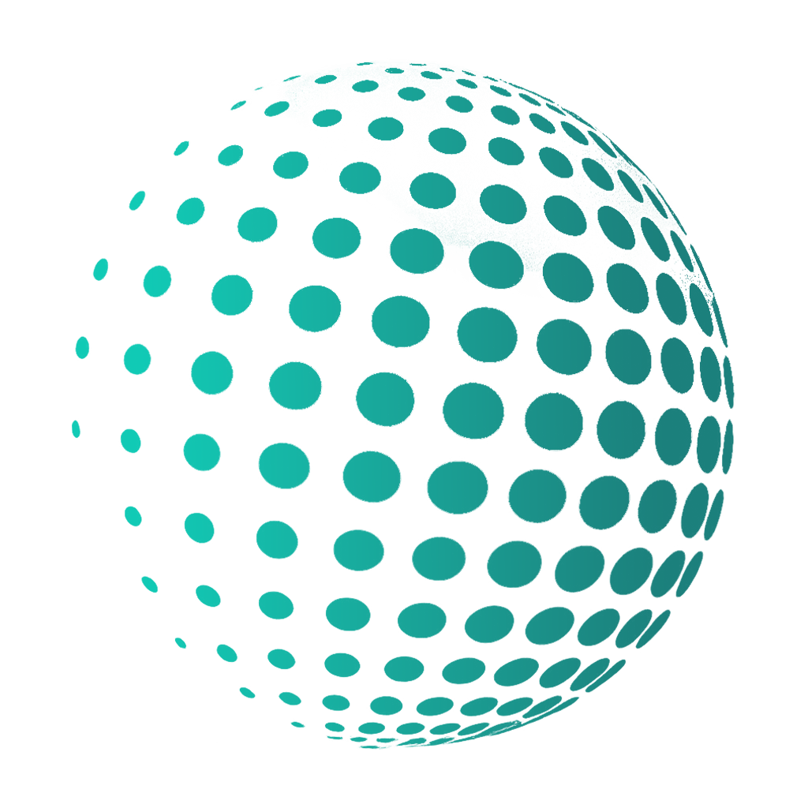

CAISP®
Certified AI Safety Professional
Level: Professional
Ideal for AI in safety practitioners responsible for implementing AI-driven solutions.
Learn MoreAI Safety Council advances the responsible use of Artificial Intelligence in Occupational Health, Safety, Environment and Risk Management through globally recognized certifications, standards and research.

Rigorous, competency-based certifications for AI in Safety professionals worldwide.
Globally developed standards and frameworks that define excellence in AI for safety.
Secure, online verification of credentials trusted by employers globally.
Certified AI Safety Professional
Level: Professional
Ideal for AI in safety practitioners responsible for implementing AI-driven solutions.
Learn MoreCertified AI Risk Management Professional
Level: Professional
Ideal for professionals managing AI risks, controls and assurance programs.
Learn MoreCertified AI Governance Professional
Level: Professional
Ideal for professionals responsible for AI governance, policies and compliance.
Learn MoreCertified AI Incident Investigation Professional
Level: Professional
Ideal for professionals investigating AI-related incidents and failures.
Learn MoreCertified AI HSE Professional
Level: Professional
Ideal for HSE professionals integrating AI to improve safety and sustainability.
Learn MoreEmployers and organizations can verify AI Safety Council certifications instantly and securely.
May 15, 2025
AI Safety Council Releases AI Safety Competency Framework
Apr 28, 2025
AI Safety Council Achieves CPD Accreditation
Apr 10, 2025
New Certification Launch: Certified AI Risk Management Professional (CAIRMP)
Our Code of Ethics establishes the fundamental principles of integrity, professionalism and responsibility that guide AI Safety professionals.
Read the Code